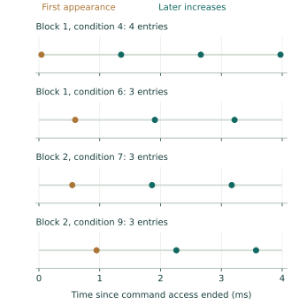

Question and rationale
The acquisition-window investigation recovered three entries in every continuous four-millisecond condition, but shorter windows retained variable counts. Its endpoint observations did not reveal when the first entry appeared or how later entries were spaced. This experiment adds bounded native observations within the window and retains quiet references to assess the effect of that observation traffic.
The capability under investigation is controlled component-local acquisition toward physical Seigsit creation and transfer. Queue entries and the SD journal remain measurements of that apparatus; they do not establish a physical Seigsit transport.
Method
Retain internal input 4, ADC DIV=0x00ffff00, FCS=0x5, exact idle admission and the established clock and route controls. There is no added pre-command wait. Each condition has a four-millisecond window measured from the initiating access's end counter, followed by an explicit stop and readiness check.
Block 1 runs an observed no-command control, an observed single command, then continuous conditions in quiet, observed, quiet, observed order. Block 2 reverses those six conditions. The boot therefore contains four observed continuous acquisitions, four quiet continuous references, two no-command controls and two single-command controls.
In observed mode, SEIGRASM brackets every FCS read with counter readings. Each changed response retains the immediately preceding read and its bracket, including the last unchanged response. All raw field changes, read counts and the final read are retained. Quiet mode accesses only the counter during its window. No FIFO consumption, SD access or second initiating command occurs inside either window.
After the window, stop repetition, require READY with both start fields clear and record stopped FCS. Persist the report, then recover at most sixteen entries, preserving raw values and errors. After recovery and persistence, wait two milliseconds and check empty stopped controls. Completed failures select staged restoration. At most 262,144 completed reads and sixteen changes are recorded per observed condition; reaching a bound is explicit and ends observation early.
Assessment criteria
The frozen assessment requires complete accepted execution, correct no-command and single-command controls, recoverable queues without observed errors, empty stopped checks and restoration. Continuous counts and arrival spacing are outcomes, with no prescribed count or cadence.
First-appearance latency is conservatively bracketed relative to the initiating access's start/end counters. Later spacing is bounded between consecutive changed-read brackets. A register observation is not an independently identified internal conversion instant. Compare quiet and observed counts with their actual command-to-stop durations; equality cannot establish absence of polling effects, and a difference cannot establish their cause.
Preparation and implementation
Candidate 7541C439E8DB appends 131 literal AArch64 instruction words to the RP1 SEIGRASM source at byte 2028. It records the four-millisecond window, changed-read brackets, completed read count, capacity outcomes and command/stop/readiness reports in 150 cells. The preceding instruction bytes and the other seven instruction sources are unchanged. The PC tools package the authored instructions and independently decode the journal; no foreign compiler produces the target implementation.
All twenty selected instruction checks passed with supplied responses, including bounded reads and changes, quiet references, counter rounding, failure paths, full journalling and recording failure after stopping. Both installation readbacks matched. The frozen protocol declares 153 operations, at most 753 records and a two-minute powered procedure.
Existing ROM/EEPROM entry, AArch64 execution and counter, SD, PCIe/RP1 interfaces and existing component firmware state remain dependencies. The acquisition sequence makes no firmware-service request. These dependencies have not been replaced by this experiment.
Results
All 753 records and 153 operations were recovered with accepted execution. Both no-command controls remained empty and both single-command controls retained one entry. All four quiet continuous references retained three entries. Observed continuous acquisitions retained 4, 3, 3, 3 entries in execution order.
| Block / condition | Entries | First appearance, µs |
|---|---|---|
| 1 / 4 | 4 | 40.019–45.111 |
| 1 / 6 | 3 | 594.778–599.889 |
| 2 / 7 | 3 | 547.222–552.259 |
| 2 / 9 | 3 | 946.093–951.185 |
Later queue appearances were much more regularly spaced than the first appearance. All nine later-spacing bounds overlap between 1,308.926 and 1,313.481 µs. Across individual brackets, the lowest lower bound was 1,306.556 µs and the highest upper bound was 1,315.833 µs. This is interval agreement near 1.31 ms, not a fitted exact period or an independently calibrated clock frequency.

Condition 4's fourth entry was observed between 3.970593 and 3.974056 ms after command completion, before the four-millisecond deadline. It was already present in the final active observation and remained through stopping and recovery. The count of four therefore did not arise solely during the later stop gap.
All thirteen observed continuous occupancy increases were one entry at a time. No decrease or other FCS field change was recorded within these windows. Recovered raw codes ranged from 854 to 861, with repeated values retained as separate entries. No calibrated temperature, voltage or distinct analog-conversion identity is inferred from those codes.
Quiet references and controls
Each block's quiet references retained 3, 3 entries. Block 1's observed conditions retained 4, 3; Block 2's retained 3, 3. Thus one observed condition exceeded its quiet references, while the other three matched. Quiet references contain no within-window queue observations, so their first-entry latency is unavailable. This comparison cannot identify a causal effect of polling.
The two single-command controls bracketed first nonempty appearance at 1.389–6.426 µs and 1.389–6.500 µs. These were much shorter command-relative brackets than the continuous conditions. Both no-command controls recorded no FCS changes throughout their observed windows.
The earlier four-millisecond conditions all retained three entries. The new fourth entry broadens the observed outcome; it does not invalidate that return. Instrumentation differs, and neither boot measured the first-arrival timing of a quiet condition.
Timing and stop boundaries
The reported CPU counter frequency was 54 MHz. Observed windows made 1,782–1,832 completed FCS reads; quiet windows made none. No read or change bound was reached. Command-end to stop-start durations ranged from 4,001.574 to 4,003.556 µs across all conditions, including the operation's overhead.
Every continuous command read back CS=0x410b: READY remained asserted alongside continuous-start. Each continuous stop wrote once, returned 0x4103 and satisfied readiness on the first poll. Controls required no stop write. Every observed condition's final active FCS equalled its stopped FCS; every stopped occupancy matched the subsequent recovery count. Condition 4 reported FCS=0x40005 for four entries without FULL or error fields. This observation does not determine physical queue depth.
All recoveries ended empty, all later stopped checks remained empty and ready, and no converter, per-entry, queue overflow or underflow error was recorded. Cleanup recovered zero remaining entries. Stopping preceded recovery by 656.290–659.474 ms, including persistence; recovery preceded the later FCS check by 310.735–312.364 ms.
The coordinator interval was 1,591,760,846 ticks, 29.477053 seconds. It excludes boot-loader time and terminal-record persistence. The actual powered interval was not independently measured.
Restoration and evidence integrity
ADC control, queue control, divider and clock control were each restored with one accepted write. Final queue status retained only EMPTY=0x100. Root link, root command, RP1 identity and the three surrounding clock fields matched their preceding observations.
Two read-only 64 MiB captures matched. Independent reconstruction checks record identity, CRC and complement, senary fields, ordinals, all 150-cell timing reports, queue recoveries and terminal counts. All 31,951 unused reservations match preparation. The partition table, executable and boot configuration are unchanged.
Seven other boot-volume sectors differ and a System Volume Information directory is present. Writer and timing remain unestablished; the acquisition tool made no SD write. A terminal record does not independently prove its own target readback.
Interpretation and next investigation
The new timing evidence separates variable first-entry delay from recurring later spacing. Within the observed conditions, an early first arrival allows four entries to fit into the window; later first arrivals accompany three entries. This accounts for the count difference within these traces without requiring irregular later acquisition. It does not identify why the first arrival varies.
Inference: an acquisition phase that continues independently of the start command is consistent with the observed first-delay variation and recurring later spacing. Command-dependent initiation, other component activity and effects of observation remain alternatives. No internal phase signal was observed, and these four conditions are not separate boots.
Proposed next investigation: establish an observed queue arrival as a timing reference, stop and drain locally, then deliberately shift the next start relative to that reference while keeping the divider and four-millisecond window unchanged. Record reference, stop, drain, actual delay and restart without SD persistence between them. Compare whether arrivals stay aligned with the prior cadence or instead track the new command. Quiet references and no-command/single-command controls remain necessary. This intervention would test the phase explanation directly rather than repeat unsynchronized starts.
For Hyphos, the useful result is a measured component behavior that can inform discovery and control on this apparatus. Independent conversion freshness, calibrated physical states, exclusive component ownership, firmware replacement and physical Seigsit creation/transfer remain unresolved. The timing result does not replace those relations.
Evidence and provenance
Preparation identity: 7541c439e8db38fbd31fc85de3c86e009b0a0d605b7612adc29ac64fea6b98fd. Returned capture SHA-256: f2818f8d03394e471795272214115cc179ae79fecdd179bfdab2bcbc0b0e2b6e.
The physical-return checks reconstruct the raw journal independently, verify timing and restoration, and reject missing recovery or altered timing definitions. The supplied-response preparation checks and physical return retain their separate evidential roles.
Following investigation
The anchored restart return tests this phase explanation with six deliberate offsets, two reversed blocks and a new observed arrival reference for every condition.